Sitio informativo sobre la saga de videojuegos de terror publicada por Konami
Los juegos de la saga
Silent Hill es una franquicia de survival horror publicada por Konami desde 1999.
Los primeros cuatro juegos fueron desarrollados por Team Silent; las entregas
posteriores estuvieron a cargo de distintos estudios. A continuación se detallan
todos los títulos de la serie, en orden de lanzamiento.
Silent Hill (1999)
Plataforma: PlayStation
Desarrollo: Team Silent (Konami)
Primer juego de la saga. Harry Mason sufre un accidente automovilístico a las
afueras del pueblo de Silent Hill y descubre que su hija adoptiva Cheryl ha
desaparecido. Mientras la busca, el jugador descubre la existencia de una secta
local llamada la Orden.
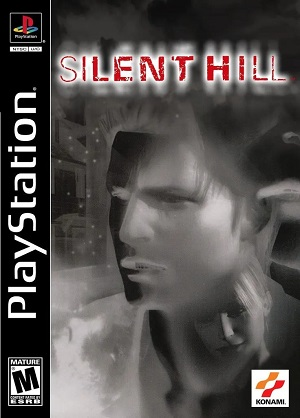
Silent Hill (1999)
Play Novel: Silent Hill (2001)
Plataforma: Game Boy Advance
Desarrollo: Konami
Versión del primer juego con formato de novela visual, lanzada en Japón para
Game Boy Advance. Reinterpreta la historia original e incluye secuencias de video.
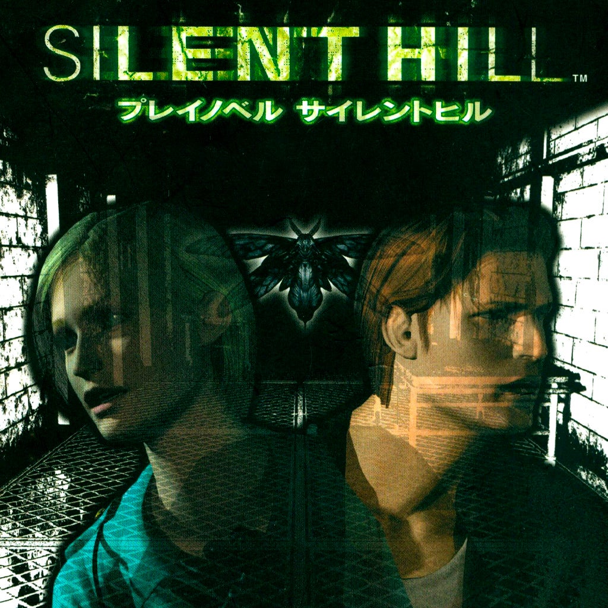
Play Novel: Silent Hill (2001)
Silent Hill 2 (2001)
Plataformas: PlayStation 2, Xbox y PC
Desarrollo: Team Silent (Konami)
James Sunderland recibe una carta de su esposa Mary, fallecida tres años antes,
que lo cita en Silent Hill. Durante su recorrido se enfrenta a criaturas que
representan su culpa, entre ellas Pyramid Head. Existen ediciones ampliadas con el escenario extra Born From a Wish: Restless Dreams (Xbox, 2001) y Director's Cut (PS2 y PC, en Europa).
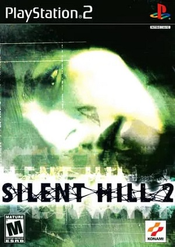
Silent Hill 2 (2001)
Silent Hill 3 (2003)
Plataformas: PlayStation 2 y PC
Desarrollo: Team Silent (Konami)
Heather Mason, una adolescente, es perseguida por miembros de la Orden, la
secta del primer juego, que la considera clave para el renacimiento de su
deidad. La historia continúa directamente los hechos de Silent Hill (1999).
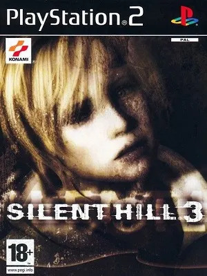
Silent Hill 3 (2003)
Silent Hill 4: The Room (2004)
Plataformas: PlayStation 2, Xbox y PC
Desarrollo: Team Silent (Konami)
Henry Townshend queda encerrado en su propio departamento, del que solo puede
salir a través de un agujero que conecta con distintos mundos distorsionados,
incluido el pueblo de Silent Hill.
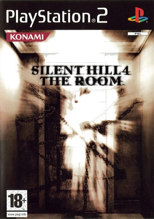
Silent Hill 4: The Room (2004)
Silent Hill: Origins (2007)
Plataformas: PlayStation Portable (2007) y PlayStation 2 (2008)
Desarrollo: Climax Studios
Precuela del primer juego. El camionero Travis Grady llega al pueblo tras ver
un incendio y queda atrapado en hechos previos a los de 1999. Fue la primera entrega desarrollada fuera de Japón.
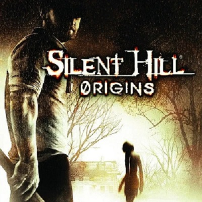
Silent Hill: Origins (2007)
Silent Hill: The Arcade (2007)
Plataforma: Arcade
Desarrollo: Konami
Versión para máquinas arcade lanzada en 2007, parte de las entregas
secundarias de la franquicia.
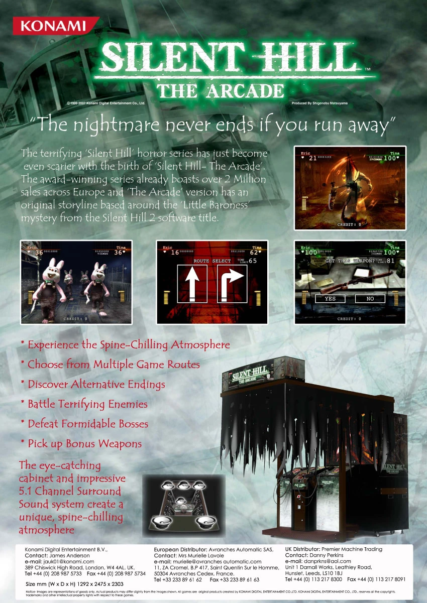
Silent Hill: The Arcade (2007)
Silent Hill: Orphan, Orphan 2 y Orphan 3 (2007-2010)
Plataforma: teléfonos móviles (Java ME)
Publicación: Konami
Trilogía de juegos para teléfonos móviles: Orphan (2007), Orphan 2 (2008) y
Orphan 3 (2010). Orphan 3 es la secuela directa de los dos anteriores.
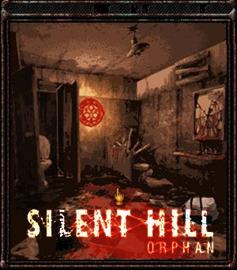
Silent Hill: Orphan
Silent Hill: The Escape (2007)
Plataforma: teléfonos móviles
Publicación: Konami
Juego para teléfonos móviles lanzado en diciembre de 2007, también conocido
como Silent Hill DX. No debe confundirse con Silent Hill: Orphan.
Silent Hill: The Escape (2007)
Silent Hill: Homecoming (2008)
Plataformas: Xbox 360, PlayStation 3 y PC
Desarrollo: Double Helix Games
Alex Shepherd regresa a su ciudad natal, Shepherd's Glen, tras el servicio
militar y busca a su hermano menor desaparecido mientras la niebla y los
monstruos comienzan a aparecer.
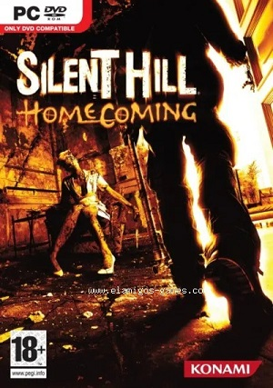
Silent Hill: Homecoming (2008)
Silent Hill: Shattered Memories (2009)
Plataformas: Wii (2009), PlayStation 2 y PlayStation Portable (2010)
Desarrollo: Climax Studios
Reinterpretación de la historia de Harry Mason y Cheryl, con una estructura
narrativa que se adapta a las decisiones y respuestas psicológicas del jugador durante la partida. No incluye combate.
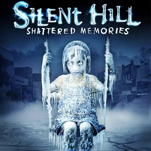
Silent Hill: Shattered Memories (2009)
Silent Hill: Downpour (2012)
Plataformas: PlayStation 3 y Xbox 360
Desarrollo: Vatra Games
Murphy Pendleton, un convicto en tránsito, queda varado en Silent Hill tras
un accidente durante su traslado penitenciario y se enfrenta tanto a los
monstruos del pueblo como a su propio pasado.
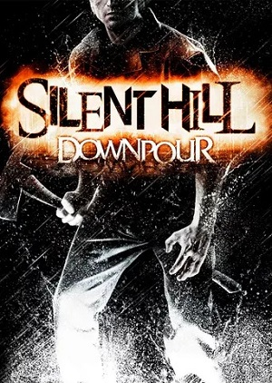
Silent Hill: Downpour (2012)
Silent Hill HD Collection (2012)
Plataformas: PlayStation 3 y Xbox 360
Desarrollo: Hijinx Studios
Recopilación con versiones remasterizadas en alta definición de Silent Hill 2
y Silent Hill 3.
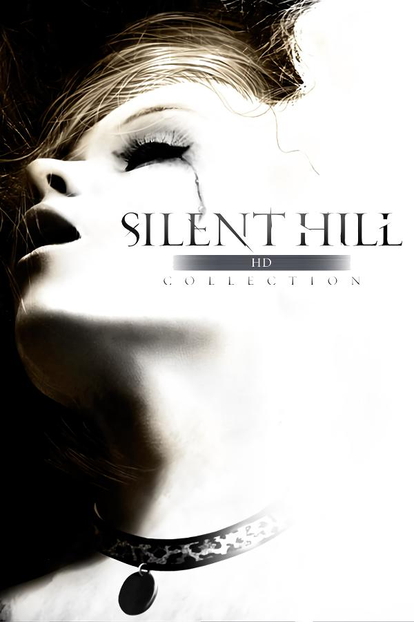
Silent Hill HD Collection (2012)
Silent Hill: Book of Memories (2012)
Plataforma: PlayStation Vita
Desarrollo: WayForward Technologies
Juego con elementos de rol y exploración de mazmorras. El protagonista, creado
por el jugador, recibe el misterioso Book of Memories, que describe toda su
vida. Incluye criaturas de entregas anteriores, como Pyramid Head.
Silent Hill: Book of Memories (2012)
Silent Hill: Ascension (2023)
Plataformas: navegador web, Android e iOS
Desarrollo: Genvid Entertainment y Konami (31 de octubre de 2023)
Serie interactiva transmitida por streaming, en la que la audiencia participa
en la historia mediante votaciones.
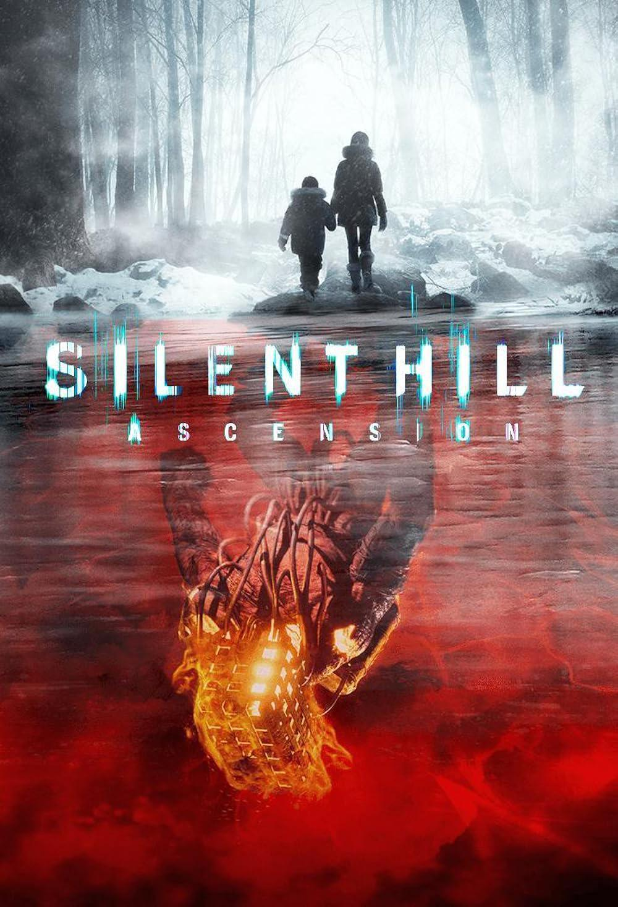
Silent Hill: Ascension (2023)
Silent Hill: The Short Message (2024)
Plataforma: PlayStation 5
Desarrollo: Konami y HexaDrive (31 de enero de 2024, gratuito)
Anita, una joven en la Alemania actual, sigue los mensajes de su amiga Maya hasta
un complejo de departamentos abandonado en Kettenstadt. Transcurre fuera del
pueblo de Silent Hill y trata temas como las redes sociales.
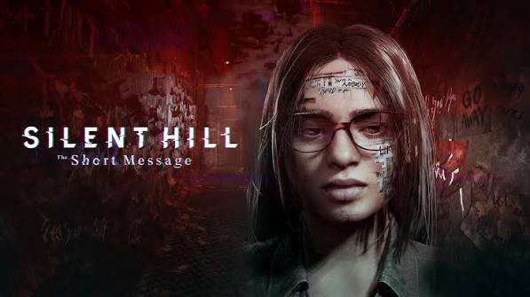
Silent Hill: The Short Message (2024)
Silent Hill 2 Remake (2024)
Plataformas: PlayStation 5 y PC
Desarrollo: Bloober Team
Remake de Silent Hill 2 lanzado el 8 de octubre de 2024. Rehace el juego de
2001 con gráficos y jugabilidad actualizados.
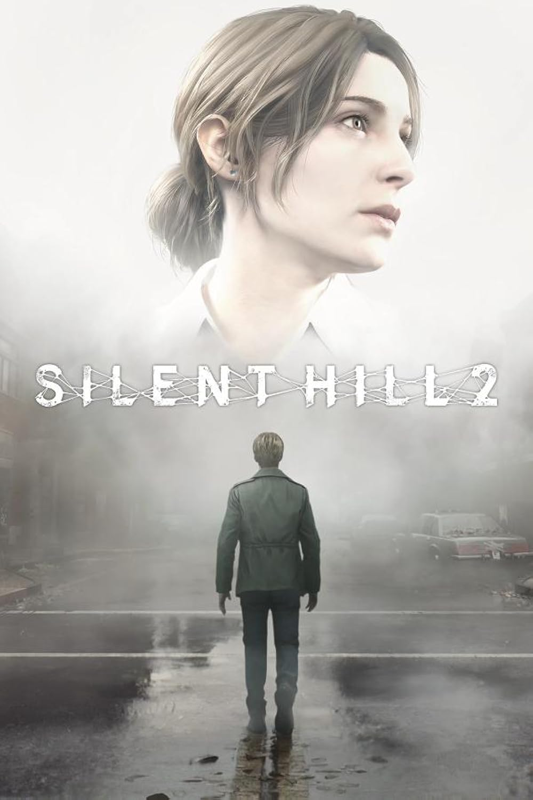
Silent Hill 2 Remake (2024)
Silent Hill f (2025)
Plataformas: PlayStation 5, Xbox Series y PC
Desarrollo: NeoBards Entertainment
Ambientada en el Japón rural de la década de 1960, en el pueblo ficticio de
Ebisugaoka. Hinako Shimizu queda aislada junto a un grupo de conocidos cuando
una niebla densa cubre el pueblo. Su combate es más cercano al estilo souls-like.
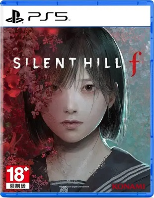
Silent Hill f (2025)
Silent Hill: Townfall (2026)
Plataformas: PlayStation 5 y PC
Desarrollo: Screen Burn Interactive
Lanzado el 24 de septiembre de 2026. Simon Ordell regresa a St. Amelia, una
isla aislada de Escocia ambientada en 1996, y la encuentra casi desierta bajo
la niebla. Se juega íntegramente en primera persona, con una televisión
portátil llamada CRTV como herramienta principal, y tiene cinco finales.
Es una historia independiente de las entregas anteriores.
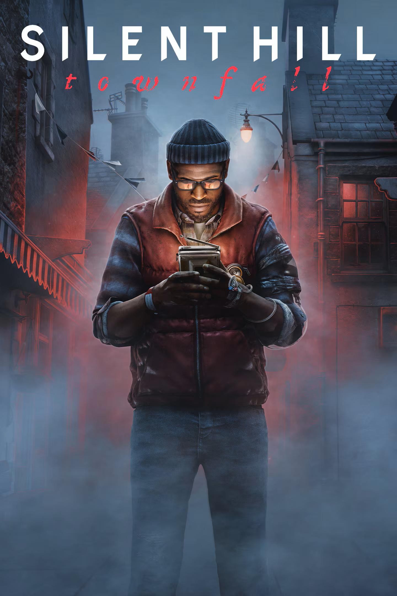
Silent Hill: Townfall (2026)
Tabla resumen de juegos
Juegos de la saga Silent Hill por año de lanzamiento
Año
Juego
Plataformas
Desarrollo
1999
Silent Hill
PlayStation
Team Silent
2001
Play Novel: Silent Hill
Game Boy Advance
Konami
2001
Silent Hill 2
PS2, Xbox, PC
Team Silent
2003
Silent Hill 3
PS2, PC
Team Silent
2004
Silent Hill 4: The Room
PS2, Xbox, PC
Team Silent
2007
Silent Hill: Origins
PSP, PS2
Climax Studios
2007
Silent Hill: The Arcade
Arcade
Konami
2007-2010
Silent Hill: Orphan, Orphan 2 y Orphan 3
Móviles
Konami
2007
Silent Hill: The Escape
Móviles
Konami
2008
Silent Hill: Homecoming
Xbox 360, PS3, PC
Double Helix Games
2009
Silent Hill: Shattered Memories
Wii, PS2, PSP
Climax Studios
2012
Silent Hill: Downpour
PS3, Xbox 360
Vatra Games
2012
Silent Hill HD Collection
PS3, Xbox 360
Hijinx Studios
2012
Silent Hill: Book of Memories
PlayStation Vita
WayForward Technologies
2023
Silent Hill: Ascension
Web, Android, iOS
Genvid Entertainment y Konami
2024
Silent Hill: The Short Message
PlayStation 5
Konami y HexaDrive
2024
Silent Hill 2 Remake
PS5, PC
Bloober Team
2025
Silent Hill f
PS5, Xbox Series, PC
NeoBards Entertainment
2026
Silent Hill: Townfall
PS5, PC
Screen Burn Interactive
Personajes
Cada entrega presenta un protagonista distinto, generalmente ajeno a los eventos
sobrenaturales del pueblo hasta que se ve forzado a enfrentarlos.
Protagonistas
Harry Mason - Silent Hill (1999) y Shattered Memories (2009).
James Sunderland - Silent Hill 2 (2001).
Heather Mason - Silent Hill 3 (2003).
Henry Townshend - Silent Hill 4: The Room (2004).
Travis Grady - Silent Hill: Origins (2007).
Alex Shepherd - Silent Hill: Homecoming (2008).
Murphy Pendleton - Silent Hill: Downpour (2012).
Hinako Shimizu - Silent Hill f (2025).
Simon Ordell - Silent Hill: Townfall (2026).
Personajes secundarios
Cheryl - hija adoptiva de Harry Mason en Silent Hill (1999).
Cybil Bennett - oficial de policía que ayuda a Harry en Silent Hill (1999).
Dahlia Gillespie y Alessa Gillespie - vinculadas a la Orden en Silent Hill (1999).
Mary Sunderland - esposa de James en Silent Hill 2.
Angela Orosco, Eddie Dombrowski y Laura - otros personajes de Silent Hill 2.
Claudia Wolf - miembro de la Orden en Silent Hill 3.
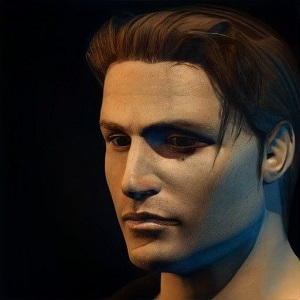
Harry Mason
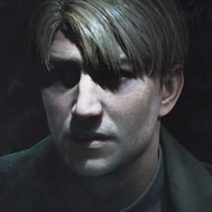
James Sunderland
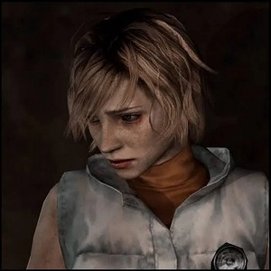
Heather Mason
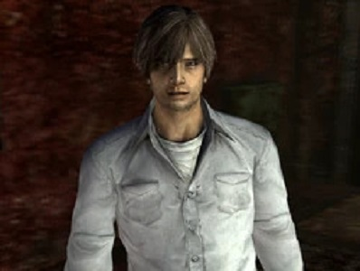
Henry Townshend
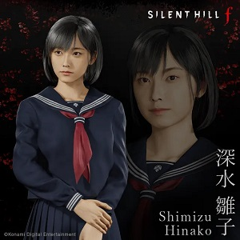
Hinako Shimizu
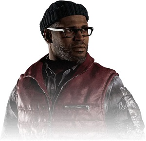
Simon Ordell
Monstruos
Los diseños de los enemigos suelen estar vinculados a elementos psicológicos o
simbólicos del protagonista de cada entrega.
Pyramid Head - Silent Hill 2, representa el castigo que James cree merecer.
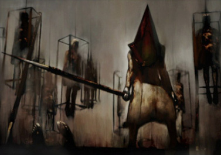
Bubble Head Nurse - Silent Hill 2, enfermeras deformes del hospital Brookhaven.
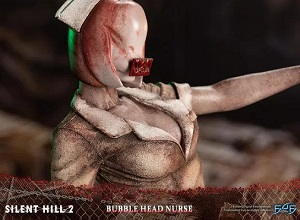
Lying Figure - figuras humanoides con la piel expuesta, presentes en más de una entrega.
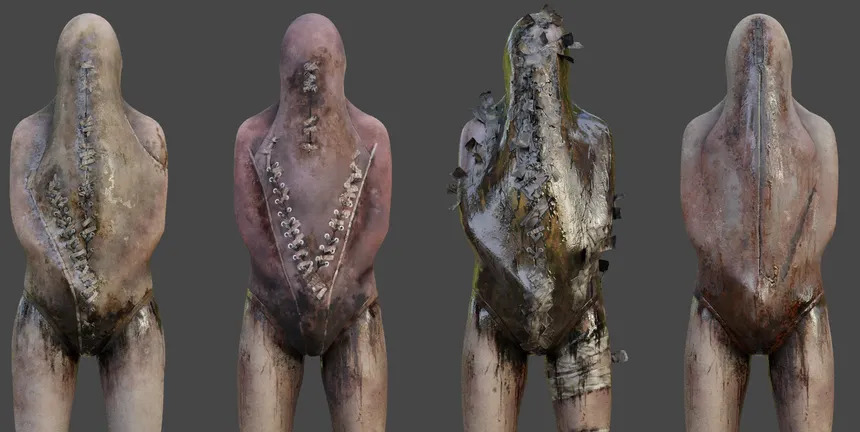
Mannequin - Silent Hill 2, enemigo con forma de maniquí formado por dos piernas.
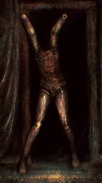
Abstract Daddy - Silent Hill 2, jefe que simboliza la relación de Angela con su padre.
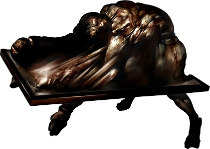
Closer - Silent Hill 3, enemigo humanoide y deforme que Heather encuentra en su recorrido.
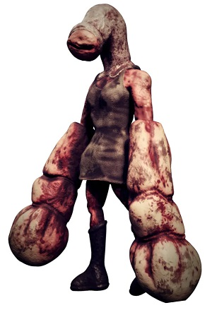
Robbie the Rabbit - mascota de un parque de diversiones que aparece en varias entregas.
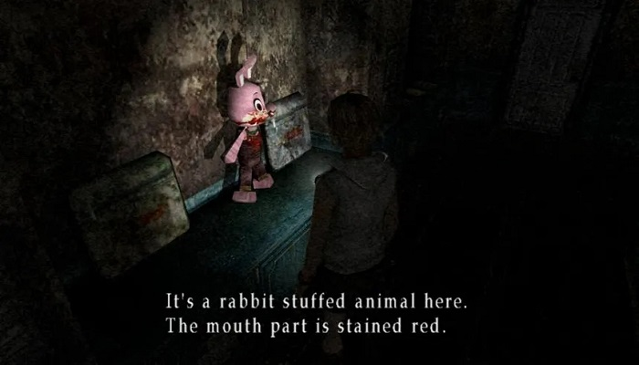
Twin Victim - Silent Hill 4: The Room.
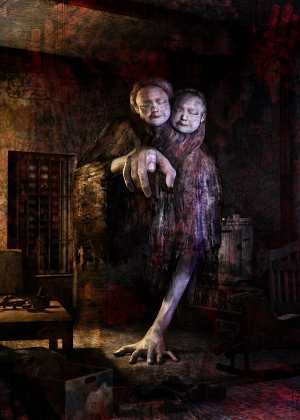
Silent Hill f introdujo criaturas propias vinculadas a hongos y flores que
deforman el cuerpo humano, distintas del imaginario industrial de las entregas
ambientadas en Estados Unidos.
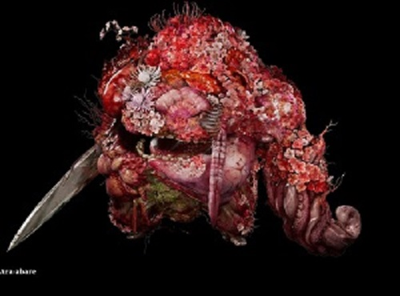
Easter eggs y detalles recurrentes
Silent Hill (1999), Silent Hill 2 (en sus ediciones ampliadas), Silent Hill 3 y Silent Hill f incluyen un final humorístico con OVNIs.
La radio emite estática cuando hay enemigos cerca. En Townfall esa función la cumple la CRTV, una televisión portátil.
Muchas calles del primer juego llevan apellidos de autores de terror y ciencia ficción, como Bachman (seudónimo de Stephen King), Bloch, Matheson, Bradbury y Levin.
Pyramid Head reaparece en Silent Hill: Book of Memories, fuera de Silent Hill 2.
Robbie the Rabbit, mascota de un parque de diversiones, aparece en Silent Hill y en Silent Hill 3.